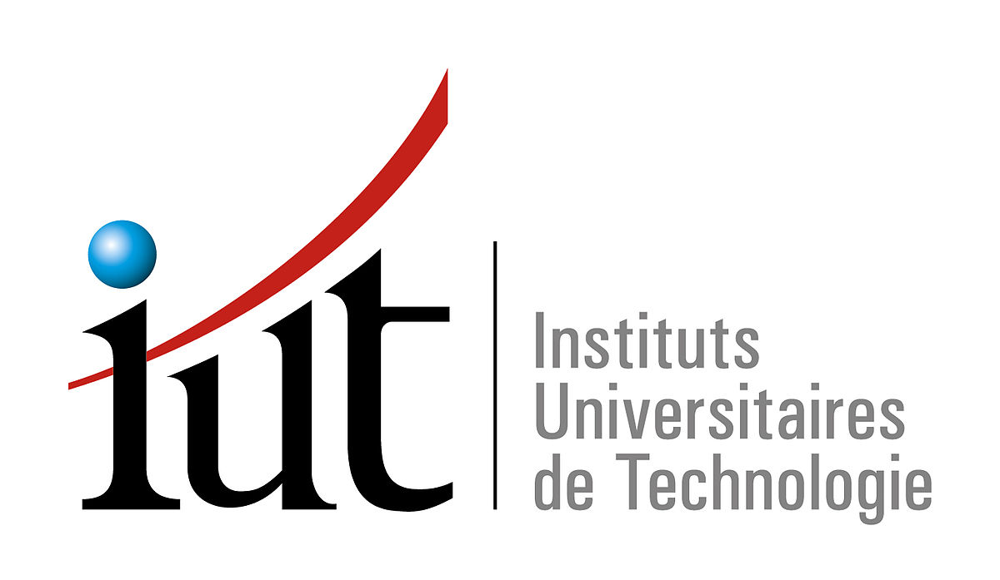
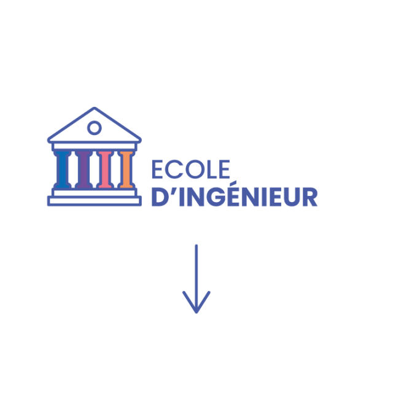

<!DOCTYPE html>
<html lang="fr"></html>
<head>
  <meta charset="UTF-8">
  <meta http-equiv="X-UA-Compatible" content="IE=edge">
  <meta name="viewport" content="width=device-width, initial-scale=1.0">
  <link rel="stylesheet" href="style.css">
  <link rel="stylesheet" href="style_postbac.css">
  <title>Spécialité NSI - Post Bac</title>
</head>
<body>
<header>
    <nav> 
        <a href = "https://citescolaire-robertbadinter.fr/"></a>
        <a class = "bouton" href="programme_NSI.html">Programme de NSI</a>
        <a class = "bouton" href="python.html">Python</a>
        <a class = "bouton" href="Post_Bac.html">Post Bac</a>
        <button class = "bouton" onclick="toggleTheme()">Changer le thème</button>
    </nav>
</header>

<div class='miniTxt'>Le Post Bac</div>

<p id = "texteee">Que faire après le bac NSI <br>
Après avoir obtenu son bac avec spécialité NSI, les étudiants ont plusieurs options pour continuer leurs études. Voici quelques-unes des voies possibles :<br>
Prépa MP2I : Pour se préparer aux concours des grandes écoles d'ingénieurs. <br>
BUT Informatique : Pour une approche plus pratique avec des stages en 2e et 3e année. <br>
BTS Informatique : Pour une formation plus courte et professionnalisante. <br>
Licence Informatique : Pour approfondir les fondamentaux scientifiques. <br>
Écoles spécialisées : Pour des formations plus orientées sur des métiers spécifiques dans le domaine de l'informatique. <br>
Ces formations offrent une variété de parcours, allant des études universitaires aux formations professionnelles, permettant aux étudiants de choisir celle qui correspond le mieux à leurs aspirations et à leurs compétences acquises au lycée<br></p>

 <div class="container">
            <div class="bloc1 bloc">
                <div class="image">
                    
                </div>
                <p class ="text-nav" >Le DUT forme des assistants ingénieurs et des chefs de projet en informatique de gestion et en informatique industrielle. Immédiatement opérationnels en développement logiciel et matériel, ils participent à la conception, la réalisation et la mise en œuvre de systèmes informatiques en fonction des cahiers des charges qui leur sont soumis.</p>
            </div>
            <div class="bloc2 bloc">
                <div class="image2">
                    
                </div>
                <p class ="text-nav">Une école d'ingénieur est un établissement d'enseignement supérieur qui forme les étudiants aux métiers d'ingénieur, principalement dans des disciplines scientifiques et technologiques. Ces écoles délivrent des diplômes de niveau bac + 5, reconnus par la Commission des titres d'ingénieur (CTI) et offrent de bonnes perspectives de carrière.</p>
            </div>
            <div class="bloc3 bloc">
                <div class="image3">
                    
                </div>
                <p class ="text-nav">Une classe préparatoire est une classe préparant les étudiants de niveau BAC aux concours d’entrée dans les grandes écoles. La classe préparatoire dure deux ans et constitue donc une porte facilitant l’entrée des étudiants dans les grandes écoles. Cependant, il est compliqué d’intégrer les classes prépas.</p>
            </div>    
        </div>

<script type="text/javascript" src="script.js"></script>


<address>
    <p class= "bas">Page créé par Stanislas  BELLANGER-MISSMAHL, Layina OUDGHIRI et Sorane CRETEL </p>
</address>
<script src="script.js"></script>


</body>


